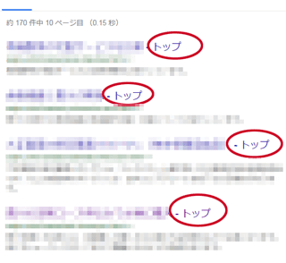

Serpのタイトル名が「トップ」になる現象
検索結果に表示されるタイトルについては、検索エンジン側で自動で変更してしまうことがあり、おかしな表示になるケースがあるようです。
例えば、当ブログのトップページの場合、タイトルタグには以下のように記述しています。
<title>作り方の研究ブログ</title>
けれども、実際の検索結果で表示されているのは以下のようなタイトルです。
作り方の研究ブログ - ブログの作り方
なぜ、このようになるのかは不明ですが、検索結果において、個別ページについてはサイトタイトルをハイフン付で補完してしまうのが原因と考えられます。
当サイトの場合はこれでも問題ないのですが、先日、健康関連の自サイトのインデックスをチェックしてみたところ、以下のような表示がされておりました。

なぜか、サイトのタイトル名が「トップ」というふうに表示されてしまうわけですが、このサイトは「トップ」というサイト名ではありません。まったく意味不明のタイトルが表示されてしまい困ってしまいました。
この原因を調べてみたところ、そのサイトではぱんくずリストを設置しており、サイトのトップページへのリンクがすべて「トップ」になっていたため、このような現象が出てきたのではないかとボクは考えております。
トップ > カテゴリ > 個別ページ名
この状態でも、サイトタイトルにテキストを使用している場合、通常なら普通に認識されるはずですが、サイトタイトルにはロゴ画像を使用しておりましたので、サイトル名の認識が弱かったのだろうと思われます。ロゴ画像にはalt属性は入れているものの、画像でリンクする形になっているため、サイト名が認識しずらかったのかもしれません。
この対処方法についてですが、とりあえず、ぱんくずリストを「トップ」から「ホーム」へ変更して対応してみました。どちらでも同じようなものですので、「トップ」の影響力を弱めれば、正常に認識してくれるのではないかと考えてます。
加えて、a hrefタグにtitle属性を付けてみました。
<a href="http://www.example.com/" title="サイト名">ホーム</a>
できれば、タイトルタグの後ろにも、「個別ページ名 - サイトタイトル」などの記述をした方がよいかもしれません。
ここまでやれば、さすがに分かってくれそうな気もしますが、できるだけ画像ではなく、テキストの形で作成するのがよいものと思われます。
まだ、この修正による結果については出てきてませんが、正常に表示されるようになったら、当ブログ上でご報告させて頂きます。
【追記：】
上記の対応後、2週間程度で正常にインデックスされました。